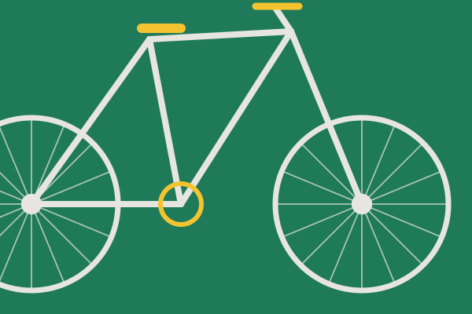
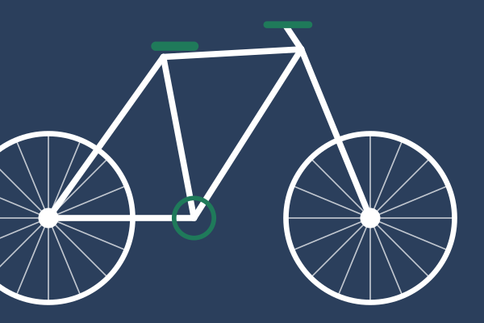

Nosotros
¿Quiénes somos?
Rueda Libre nació en un pequeño garaje de Lima con una idea sencilla: que moverse en bici por la ciudad sea cómodo, seguro y barato. Hoy somos un taller de bicicletas urbanas que ajusta, repara y acompaña a quienes eligen pedalear cada día.
Nuestro equipo combina mecánicos con años de experiencia y ciclistas que conocen cada bache de las avenidas limeñas.

Lo que hacemos
Hacemos mantenimiento preventivo, cambio de cámaras y llantas, ajuste de frenos y cambios, y armado de bicicletas a medida. Explicamos cada trabajo para que aprendas a cuidar tu bici entre visitas.
Creemos en el trato cercano: sin tecnicismos, con presupuesto claro y entregas a tiempo.
